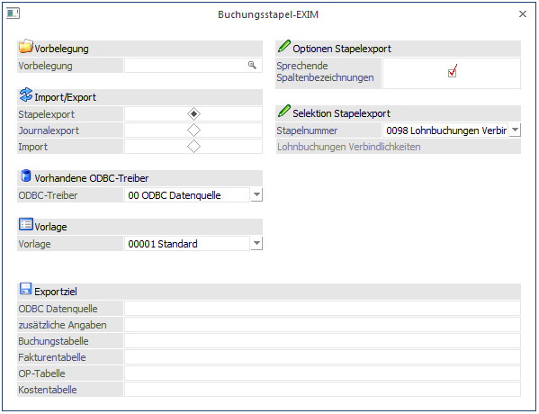
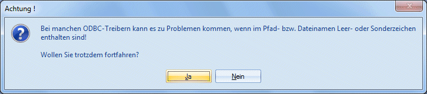
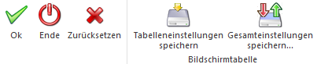

Das Buchungsstapel-EXIM dient dazu, bestehende Buchungsstapel zu exportieren oder Buchungsstapel von extern zu übernehmen. Voraussetzung dafür, dass ein Buchungsstapel-EXIM durchgeführt werden kann ist, dass im Programm WinLine START Vorlagen definiert wurden.
Der Aufruf erfolgt im Programmteil
1 WinLine FAKT
1 Erfassen
1 Buchungsstapel-EXIM
oder im Programmteil
1 WinLine FIBU
1 Buchen
1 Buchungsstapel-EXIM
oder im Programmteil
1 WinLine LOHN (Österreich)
1 Abschluss
1 Buchungsstapel-EXIM

Ø Vorbelegung
Über die Vorbelegung kann ein Ex- oder Importvorgang gespeichert werden. Dabei werden alle vorgenommenen Einstellungen gemerkt und diese können jederzeit wieder verwendet werden. Wurde bereits eine Vorbelegung definiert, kann diese durch Drücken der F9-Taste gesucht werden. Wurde noch keine Vorbelegung definiert, kann diese durch eine Eingabe im Feld "Vorbelegung" angelegt werden. Wurden alle Eingaben durchgeführt, wird die Vorbelegung durch Drücken der F5-Taste gespeichert.
Ø Import/Export
Mit dieser Option kann bestimmt werden, welche Aktion durchgeführt werden soll.
ü Stapelexport
Mit dieser Option
kann ein bestehender Buchungs-Stapel (der im Zuge der Fakturierung oder in der
WinLine FIBU gebildet wurde) exportiert werden.
ü Journalexport
Mit dieser Option
kann ein Teil oder das gesamte Buchungs-Journal exportiert werden.
ü Import
Mit dieser Option können
Buchungszeilen in einen Stapel importiert werden.
Je nachdem, welche Option gewählt wurde, werden unterschiedliche Eingabefelder angezeigt:
Stapelexport
Wird die Option "Stapelexport" verwendet, kann aus der Auswahllistbox
Ø Stapelnummer
ein Stapel gewählt werden, der exportiert werden soll. Im Feld
Ø Stapelbez.
wird dann der Name des Stapels angezeigt.
Journalexport
Wird die Option "Journalexport" verwendet, können folgende Eingabefelder bearbeitet werden:
Ø Buchungsnummer von - bis
Einschränkung der Buchungsnummern, die ausgegeben werden sollen.
Ø Periode von - bis
Einschränkung der Buchungsperioden, die ausgegeben werden sollen.
Wird keine Einschränkung vorgenommen (also der Programmvorschlag), werden alle Buchungszeilen exportiert.
Ø Automatikbuchungen unterdrücken
Beim Aktivieren der Checkbox werden die Automatikbuchungen und die entsprechenden KORE-Zeilen (Skontobuchungen, FW-Diff-Buchungen, usw.) nicht berücksichtigt.
Import
Wird die Option "Import" verwendet, kann im Eingabefeld
Ø Stapelnummmer
der Stapel angegeben werden, in den die Buchungen importiert werden sollen. Dazu kann im Feld
Ø Stapelbez.
auch der Name des Stapels vergeben werden. Unter dieser Stapelnummer kann der Buchungsstapel dann auch im Menüpunkt Buchen/Buchen/Dialog Stapel gebucht werden.
Ø Daten aus Quelldatei löschen
Wird diese Option aktiviert, dann werden die Buchungszeilen nach dem Import aus der Quelldatei gelöscht. Somit kann ein mehrfacher Import verhindert werden.
Hinweis:
Wird dabei eine Textdatei (*.txt) verwendet, so wird die komplette Datei gelöscht (NICHT nur der Inhalt)!
Ø Stapel nach dem Buchen löschen
Wenn diese Option aktiviert wird, dann bekommt der durch den Import erzeuge Stapel eine Kennzeichnung. Damit wird der Stapel nach dem erfolgreichen Verbuchen gelöscht (wie z.B. die negativen Stapel, die direkt von der WinLine FAKT erzeugt werden).
Ø Stapel sofort buchen
Bei Verwendung dieser Option wird der Stapel nach dem erfolgreichen Import sofort verbucht, wobei zwei weitere Eingabefelder zur Verfügung stehen:
Ø Periode
Aus der Auswahllistbox kann gewählt werden, in welcher Periode der Stapel verbucht werden soll. Dabei stehen folgende Optionen zur Verfügung:
ü Perioden 0 -
13
Eröffnungsperiode, Jänner bis Dezember und Abschlussperiode
ü Automatisch
Die Buchungsperiode
wird aus dem Datum der ersten Buchungszeile ermittelt.
ü Eingabe pro Buchung
Bei dieser
Variante wird die Buchungsperiode aus jeder Buchungszeile extra ermittelt und
auch so gebucht.
Ø Batchnr.
Hier kann die Batch-Nummer eingegeben werden, mit der der Stapel verbucht werden soll.
Ø ODBC-Treiber
Wahl des ODBC-Treibers der verwendet werden soll. Welche Treiber zur Verfügung stehen, hängt von der Installation des PCs ab. Grundsätzlich sind die ODBC-Treiber nicht (bzw. nur teilweise) im Auslieferumfang der WinLine enthalten. MESONIC ist für die Funktionsfähigkeit bzw. das Vorhandensein der Treiber nicht verantwortlich.
Um sicherzustellen, dass Notizfelder in voller Länge ex- bzw. importiert werden, muss je nach verwendetem Treiber (Access- oder SQL-Treiber), der erste auswählbare aus der Auswahllistbox verwendet werden. D.h. ist die Auswahlmöglichkeit an Treibern der Reihenfolge nach z.B. 02 Microsoft Access Driver (*.mdb), 10 Microsoft Access Treiber (*.mdb) und 16 Driver do Microsoft Access (*.mdb), müsste in diesem Fall 02 Microsoft Access Driver (*.mdb) gewählt werden. Andernfalls wird das Notizfeld nur mit 255 Zeichen ex- bzw. importiert.
Hinweis
Je nachdem, welche ODBC-Treiber verwendet werden bzw. welche ODBC-Treiber-Version verwendet wird, kann es zu ungewünschten Verhalten des Export/Imports kommen, wenn Sonderzeichen im Ziel- Verzeichnisnamen oder im Datenbankname vorkommen. Aus diesem Grund wird - wenn solche Sonderzeichen verwendet werden - eine entsprechende Warnmeldung ausgegeben:

Hinweis
Es steht in der Auswahl auch die Option "97 XML Webservice", womit die Export-/Importdaten in eine bzw. von einer XML-Datei verarbeitet werden können. Die Option kann nur in Verbindung mit einer Vorlage verwendet werden, die als "Webservice-Vorlage" angelegt wurde.
Ø Sprechende Spaltenbezeichnung
Ist diese Checkbox aktiv, erhalten die exportierten Spalten den Namen des ursprünglichen Feldes.
Ist diese Checkbox nicht aktiv, werden die Spalten nach den Spaltenbezeichnungen in der Datenbank (z.B. C021) benannt.
Ø Vorlage
Eingabe der Vorlage, die für den Export/Import verwendet werden soll.
Hinweis
Beim Import einer berechnenden Zahlungskondition werden nun die Skonto- und Nettotage errechnet, wenn die Felder mit der Angabe der Tage nicht in der Vorlage enthalten sind. Die Skonto- und Nettotage werden auch dann errechnet, wenn keine Zahlungskondition importiert wird und eine berechnete Zahlungskondition ist im Personenkonto eingetragen ist.
Ø Beschreibung von Datei bzw. Datenbank
In Abhängigkeit der am PC installierten ODBC-Treiber werden Felder angezeigt, in denen Ziel (Bereich in den die Daten aus der WinLine kommend abgespeichert werden) bzw. Quelle (Bereich, aus dem die Daten in die WinLine importiert werden) beschrieben werden. Im einfachsten Fall werden vier Dateinamen angegeben, in denen die einzelnen Stapelteile gespeichert werden. Dies ist beim Texttreiber der Fall.
Bei der Wahl von Datenbanken als Ziel oder Quelle, müssen der Datenbankpfad, der Datenbankname und die Tabellennamen für die Stapel (Buchungstabelle, Fakturentabelle, Zahlungstabelle und Kostentabelle) eingegeben werden.
Achtung
Der ODBC-Treiber kann zwar innerhalb von Datenbanken Tabellen erzeugen und diese Tabellen mit Datensätzen füllen, er kann aber nicht die Datenbank selbst erstellen. Diese muss bereits vorhanden sein.
Achtung
Die Verbindung zwischen der Buchungstabelle und den zugehörigen anderen Tabellen (Fakturentabelle, Zahlungstabelle und Kostentabelle) wird durch die eindeutige Buchungsnummer hergestellt. Diese muss in allen Tabellen (Dateien) enthalten sein.
Buttons

Ø OK
Durch Anklicken des OK-Buttons wird der Export bzw. Import durchgeführt.
Ø Ende
Durch Drücken der ESC-Taste wird das Fenster geschlossen, alle Auswahlen gehen verloren.
Ø Zurücksetzen
Durch Anklicken der Zurücksetzen-Taste werden alle getätigten Einstellungen verworfen. Es kann eine neue Selektion durchgeführt werden.
Ø Tabelleneinstellungen speichern
Die Spalten einer Tabelle können grundsätzlich an beliebige Positionen verschoben, bzw. in der Breite entsprechend angepasst werden. Durch Anwahl des Buttons "Tabelleneinstellungen speichern" werden die Einstellungen benutzerspezifisch gespeichert und bei dem nächsten Aufruf des Programmpunktes wieder vorgeschlagen.
Ø Gesamteinstellungen speichern
Im Gegensatz zu "Tabelleneinstellungen speichern" können mit "Gesamteinstellungen speichern" mehrere Tabellenaufbauten gespeichert und nach Wunsch geladen werden. Zusätzlich werden Sonderfunktionen der Tabelle (z.B. "Spalte gruppieren") ebenfalls bei der Speicherung bedacht.
Anwendungsfälle
Das Programm Buchungs-EXIM bietet eine Reihe von Anwendungsmöglichkeiten.
ü Filiale/Zentral Lösung
ü Lokal getrennter Einsatz von WinLine FAKT und WinLine FIBU
ü Schnittstelle zu anderen Fakturierungsprogrammen